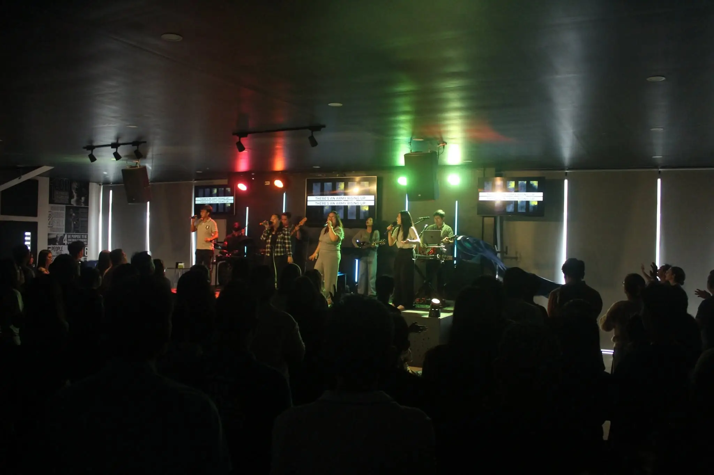
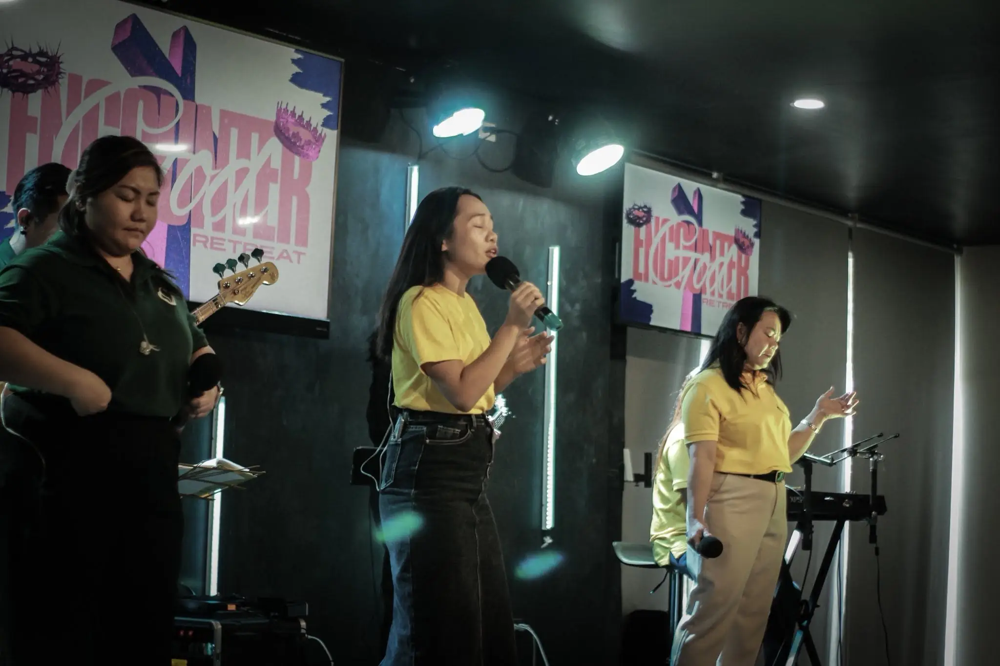
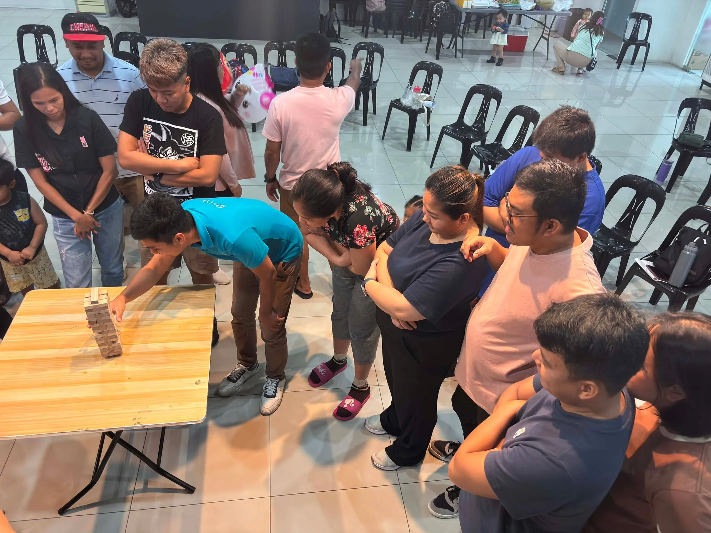
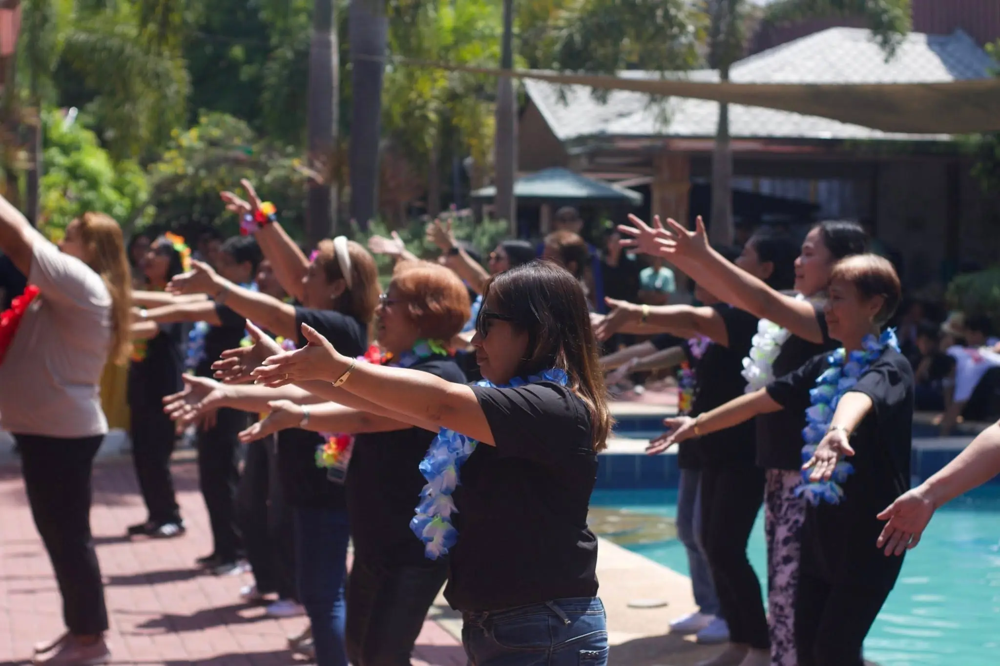

What's Happening
at VCA Muzon
Stay updated with our latest events, services, announcements, and church activities.
Welcome to our Church!
No matter where you are in your journey, you are always welcome here. We are a community growing together in faith, worshiping Jesus, serving others, and experiencing God’s love.

A place to belong,
a family to grow,
a mission to fulfill.
Victory Churches of Asia - Muzon is a Christ-centered church in San Jose del Monte, Bulacan, committed to glorifying God, making disciples, and serving the community through the love and truth of Jesus Christ.
Whether you are visiting for the first time or searching for a church family, we believe there is a place for you here.
Learn More →SERVICE SCHEDULE
Sunday Service
Morning
8:30AM 10:30AM LIVE STREAMINGAfternoon
4:30PMYouth
Sunday
Midweek Service
Thursday
6:00PM


YOU BELONG HERE
No matter where you are in life, there is a place for you at VCA Muzon.